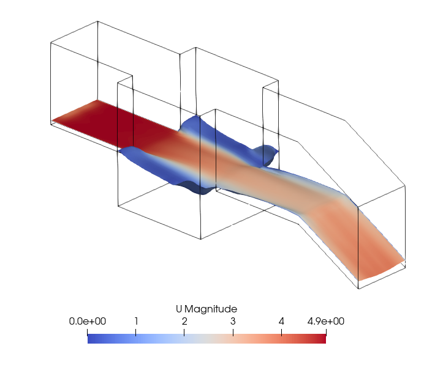

道路法面における排水構造物の溢水予測に関する数値流体解析を用いた予測信頼性評価
| 氏名 | 所属 |
|---|---|
| 三宮 広之 | 株式会社 三英技研 |
Background / 背景
- 道路排水構造物の重要性（溢水が法面崩壊を引き起こす要因）
- 従来設計（定常流仮定）の限界
Research Motivation / 研究動機
- 急変流を考慮しない従来法の課題
- 数値解析を設計に用いるにはV&Vによる信頼性評価の必要性
Objectives and Approach /目的と手法
- 急変流など詳細な流れ場を再現できるCAEを用いた設計手法の基盤構築
- V&Vの手法による数値解析の信頼性の確保
Review of Previous Studies / 既往研究レビュー
- まだ調査中でまとめられていません。
トレンチに関する研究
- 藤田一郎先生の論文
- 常流がメイン
- その他のトレンチで調べてみたが、比較的水面の変化が小さい常流を対象
段落ち流れの研究
- 大津岩尾先生の論文
- 内田先生の論文（潜り噴流、波状跳水の論文）
VOF法による数値解析の研究
V&Vに関する研究
Methodology / 研究手法
数値解析
- interFoamによるVOF法
- GCIによる検証（Verification）
水理実験
- 集水ますにおける合流の流れ場の再現(ストレート、90度偏向)
- 集水ますにおける合流の流れ場の再現
Preliminary Results / 予備解析
- 計算結果の一例
- 初期水深 0.02m
- 流量 0.03 m3/s
- 水路幅 0.3 m
- フルード数11.29
- 水面が思ったよりも上昇しない結果となった。

Figure 1: 3次元流体解析の結果
Research Plan / 今後の計画
- 実験装置の構築と検証項目
- V&Vを通じたモデルの信頼性向上
- 設計指針への展開
Expected Contributions / 学術的・実務的貢献
- 数値解析に基づく性能設計の提案
- 実験・解析を通じた設計信頼性の向上
- 道路排水分野への新しい設計基盤の提供
Summary / まとめ
- 研究の目的と重要性の再確認
- 方法と今後の展望の整理